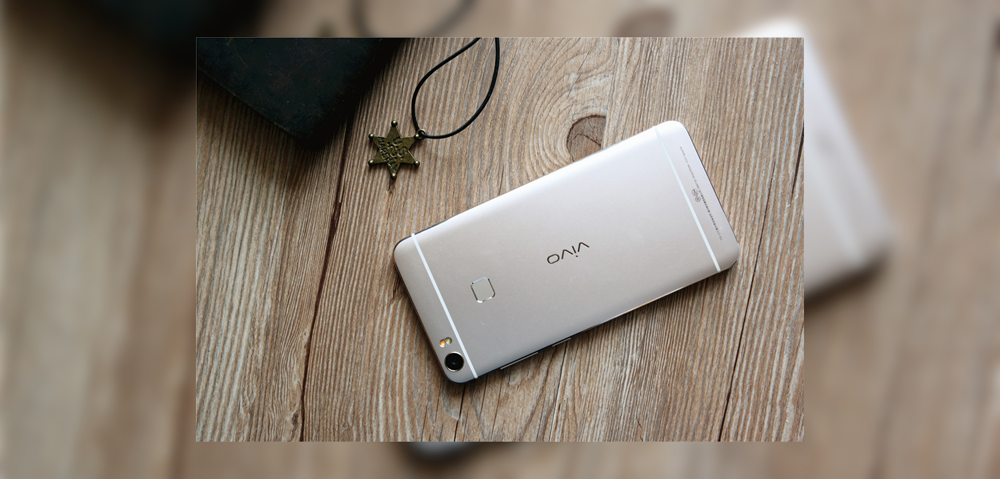

vivo Xplay5 Review
22/10/2016

vivo Xplay5 Review

- Size: 153.5X76.2X7.59mm
- Weight: 167.8g
- Battery: 3600mAh
- Screen size: 5.43 inch
- Resolution: 2560X1440
- Size: 153.5X76.2X7.59mm
- Weight: 167.8g
- Battery: 3600mAh
- Screen size: 5.43 inch
- Resolution: 2560X1440
After two years of sedimentation and waiting, vivo has finally brought Xplay 3S upgrade flagship product Xplay5, and boldly shouting "fast without boundaries" slogan, seems to be "will be carried out in the end." This long-awaited product what fast? Where fast? Please follow my experience together to understand it. Xplay5 has two versions of Standard and Ultimate. Both versions have a 2K-screen and 128GB flash memory, the difference is in the SOC, memory and Hifi configuration. I experience is the standard version of Xplay5, which is equipped with Xiao Long 652 chip, 4GB ram, 128GB rom, 3600mAh battery, 1600 pixel camera, 2K resolution double curved screen. From the configuration point of view, even the standard version also appears to be quite sincere, in line with its high-end flagship positioning. When I first saw Xplay5, there is a familiar and unfamiliar feeling. Said it strange because the positive piece of the hyperbolic screen very visual impact, people can be a glance it and X6 series distinction. It is familiar because it is because the family family-style design language: the top left of the front of the body logo, the bottom three hot silver virtual keys.It is familiar because it is because the family family-style design language: the top left of the front of the body logo, the bottom three hot silver virtual keys. The back is divided into nano-injection molding antenna into the three-stage design, metal zirconium sand spraying process, feel moist and delicate, the overall sense of strong. I personally like this family-style design is quite good impression. As a flagship model, fingerprint recognition naturally will not be absent. And X6 series, Xplay5 is the back of the fingerprint identification design. The actual experience, the unlock speed and success rate is very high, the basic are "seconds solution." Card slot, Xplay5 is equipped with a dual nano sim card slot, thanks to the characteristics of Xiaolong 652, dual-card are full Netcom. As standard with 128GB storage space, TF card expansion slot becomes less necessary. Volume keys and power keys are located in the right side of the fuselage, the location is moderate, according to them will not be very strenuous. At the same time, key feedback clear, feel good, in line with its high-end positioning. Xplay5 camera for the 16 million pixels, still raised, the right color temperature flash, supplemented by two-color, I believe that can bring a good camera experience. Xplay5 does not use the Type-C interface, but with a standard Micro-usb interface. In the Type-C interface is not yet universal today, the choice of Micro-usb interface is a very wise and secure choice. Xplay5 a total of champagne gold and rose gold in two colors, my hands of champagne gold lighter color, in the light irradiation of some slightly pan-pink. Speaking of Xplay5, surface screen is not open around the topic. Last year, the Samsung S6 Edge for the first time the hyperbolic screen into the public view, it can be said that the double-curved screen in the feel and bring pleasure to the visual 2.5D arc glass is far and can not. When the finger across the edge, there is a smooth, coherent feeling. At the same time, the contents of the screen close to the edge of the formation of deformation, like a scroll-like indentation screen, as if exposure to science fiction movies.